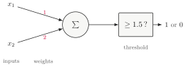
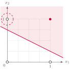
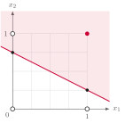
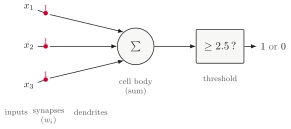
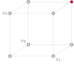
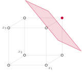
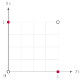

NJIT · CS 301 · INTRODUCTION TO DATA SCIENCE · FALL 2026 · UNIT I PDF
Meeting 2. Threshold Units and Decision Boundaries
Act 1 Gates by Hand · Act 2 More Than Two Inputs · Act 3 The Linear Score
Meeting 1 ended with a unit whose weights and threshold were given: \(w = (2, -1, 2)\), \(\theta = 3\), and the only question was whether it fired. We now choose weights and a threshold to reproduce a specified gate. Geometrically, the unit’s inputs become points and its decision boundary becomes a line. We will use that picture to choose weights, then introduce vector notation to handle more inputs.
Act 1. Gates by Hand
1.1 Evaluating a two-input unit
Consider a two-input unit with the following parameters: weights \(w_1 = 1\) and \(w_2 = 2\), threshold \(\theta = 1.5\).

Feed it the four rows of the AND table and see what comes out. The sum for an input \((x_1, x_2)\) is \(1\cdot x_1 + 2\cdot x_2\), and the unit fires when that sum is at least \(1.5\):
| \(x_1\) | \(x_2\) | sum | fires? | AND |
|---|---|---|---|---|
| 0 | 0 | 0 | 0 | 0 |
| 0 | 1 | 2 | 1 | 0 |
| 1 | 0 | 1 | 0 | 0 |
| 1 | 1 | 3 | 1 | 1 |
Three rows out of four are right. The unit fires on \((0,1)\), where AND says \(0\): the second input alone, with its weight of \(2\), is enough to push the sum past \(1.5\). To correct that row, we can change a weight or the threshold. A picture helps us see which changes will work.
1.2 Interpreting the decision boundary
Here is the same unit as a picture.

Read the picture one part at a time.
- Each of the four inputs is a point on the unit square: \((0,0)\), \((0,1)\), \((1,0)\) and \((1,1)\) — the four corners.
- A filled corner means the gate should answer \(1\) there; an open corner means it should answer \(0\). For AND, only \((1,1)\) is filled.
- The shaded side is where the unit fires — where \(w_1x_1 + w_2x_2\) has reached the threshold. Its edge is a straight line.
- For nonzero weights, the weights and threshold determine a line and its firing side.
The ringed corner \((0,1)\) lies on the firing side even though its label is \(0\). Moving the boundary upward can put this corner on the nonfiring side.
1.3 The equation of the boundary
The boundary is where the sum equals the threshold:
Solve for \(x_2\) and it is a line like any other:
Two points are enough to draw it: at \(x_1 = 0\) the line passes through \(x_2 = 0.75\), and at \(x_1 = 1\) through \(x_2 = 0.25\).

Rearranging the equation shows how the parameters determine the boundary. Move the threshold and the line slides; changing a weight can change both its position and its angle.
If \(w_2 = 0\) and \(w_1 \neq 0\), the boundary is the vertical line \(x_1 = \theta/w_1\); we cannot solve for \(x_2\). If both weights are zero, the sum is always zero and the unit gives the same answer on every input. In that case there is no separating line.
Example 1.1 Choosing parameters for AND
This is the first task of the meeting’s sheet: find \(w_1\), \(w_2\) and \(\theta\) so that the unit answers AND on all four rows — and then, in a sentence or two, write down how you decided. What did you look at first, and what made you change it?
Two possible choices illustrate different ways to adjust the boundary. The first keeps the weights \((1, 2)\) and raises the threshold: push \(\theta\) past \(2\), say to \(2.5\), and the line moves away from the origin, parallel to itself, until \((0,1)\) falls off the firing side. Check the four rows: sums \(0, 2, 1, 3\) against \(2.5\) give \(0, 0, 0, 1\) — AND. The second starts over with equal weights, \(w_1 = w_2 = 1\) and \(\theta = 1.5\): the sums are \(0, 1, 1, 2\), and only the last reaches \(1.5\) — AND again, with a line that runs diagonally between \((1,1)\) and the other three corners.
Both settings reproduce AND. Infinitely many settings satisfy the same four truth-table constraints.
1.4 Describing a parameter search
Your explanation of how you chose the numbers describes a procedure. Look at the two routes of Example 1.1. One says: I saw which corner was on the wrong side and moved the line toward it. The other says: I tried numbers until the table came out right. Those are two different procedures, and both of them worked.
Both procedures search for parameters by checking their outputs. Record the steps clearly enough that someone else could follow them.
Act 2. More Than Two Inputs
2.1 A gate with three inputs
A three-input unit has three weights. To implement three-input AND, it must output \(1\) exactly when all three inputs are \(1\).

The three binary inputs give eight rows. The evaluation rule is still a weighted sum followed by a threshold comparison.
Example 2.1 Eight rows
With \(w = (1, 1, 1)\) the sum is simply the number of inputs that are \(1\), so the eight rows can be checked at a glance: the sum is \(0\) for one row, \(1\) for three rows, \(2\) for three rows, and \(3\) for the row \((1,1,1)\) alone. Against \(\theta = 2.5\), only that last row fires.
| \(x_1\) | \(x_2\) | \(x_3\) | sum | fires? |
|---|---|---|---|---|
| 0 | 0 | 0 | 0 | 0 |
| 0 | 0 | 1 | 1 | 0 |
| 0 | 1 | 0 | 1 | 0 |
| 0 | 1 | 1 | 2 | 0 |
| 1 | 0 | 0 | 1 | 0 |
| 1 | 0 | 1 | 2 | 0 |
| 1 | 1 | 0 | 2 | 0 |
| 1 | 1 | 1 | 3 | 1 |
Any threshold with \(2 < \theta \leq 3\) works. Choosing \(2.5\) leaves equal room between the threshold and the nearest sums on either side.
2.2 Eight rows, eight corners
Two inputs gave a square with four corners. Three give a cube with eight, and only \((1,1,1)\) is filled: only there should the unit fire.

The boundary \(x_1 + x_2 + x_3 = 2.5\) is a plane. The patch drawn below separates the firing corner from the other seven corners.

The plane separates the firing half-space, containing \((1,1,1)\), from the other seven corners.
2.3 Decision boundaries in higher dimensions
The boundary depends on the number of input dimensions:
| two inputs | three inputs | four, or forty |
| a point on a square | a point in a cube | a point … somewhere |
| \(w_1x_1 + w_2x_2\) | \(w_1x_1 + w_2x_2 + w_3x_3\) | \(w_1x_1 + \cdots + w_nx_n\) |
| split by a line | split by a plane | split by ? |
The arithmetic extends to any number of inputs without changing shape. We cannot draw the full four-dimensional space as an ordinary picture, though views of selected coordinates can still help. The boundary is called a hyperplane; like a line in two dimensions or a plane in three, it separates the space into two sides.
2.4 Examples with more inputs
Many problems involve more than two or three inputs.
- A weather record can contain a high temperature, a low temperature, humidity, and pressure: four features describing one day.
- The cell of meeting 1 was never working with two inputs. A cortical neuron collects from thousands of synapses at once.
The geometry still helps us think about the unit. To calculate with many inputs, we also need notation that works in forty dimensions as easily as in two.
\(w_1x_1 + w_2x_2 + w_3x_3 + w_4x_4 + w_5x_5 + \cdots\) — at forty inputs, this has forty terms. Vector notation lets us work with the same sum without writing every term each time.
Act 3. The Linear Score
3.1 Vector notation for the weighted sum
The sum, in full and in the shorthand from meeting 1:
Now collect the weights into one object, \(\mathbf{w} = (w_1, \ldots, w_n)\), and the inputs into another, \(\mathbf{x} = (x_1, \ldots, x_n)\) — two vectors, each a list of \(n\) numbers. Then the whole sum has a name and a symbol:
Also called the dot product, it multiplies corresponding entries of two vectors of length \(n\) and sums the products to return one number. Both vectors must have the same number of entries.
3.2 The bias and the score
\(\mathbf{w}\cdot\mathbf{x}\) is the weighted sum. We compare it with \(\theta\): values above the threshold are on the firing side, and values below it are on the other side. The boundary is where the weighted sum equals \(\theta\), which need not be zero.
It is tidier to put the threshold on the same side of the comparison as everything else. Write \(b = -\theta\):
\(b\) is called the bias. This substitution preserves the output on every input. The threshold has become one more number of the same kind as the weights — a number to choose, alongside them — and the unit’s decision is now a comparison with zero. The unit, in full: it answers \(1\) when \(\mathbf{w}\cdot\mathbf{x} + b \geq 0\), and \(0\) otherwise.
From here on, the score means \(s = \mathbf{w}\cdot\mathbf{x} + b\), including the bias. Now its sign tells us the side: positive means the firing side, negative means the other side, and zero means the boundary. For fixed nonzero weights, scores closer to zero correspond to points closer to the boundary.
3.3 The inner product as a matrix product
The inner product can be written as a matrix product. Take \(\mathbf{w}\) and \(\mathbf{x}\) to be columns — \(n \times 1\) matrices. Then \(\mathbf{w}^{\mathsf{T}}\), the transpose, is a row, \(1 \times n\), and the product of a \(1 \times n\) row with an \(n \times 1\) column is a \(1 \times 1\) matrix:
A \(1 \times 1\) matrix is a single number, which is why the shapes work out. You will meet \(\mathbf{w}^{\mathsf{T}}\mathbf{x}\), \(\mathbf{w}\cdot\mathbf{x}\) and \(\langle \mathbf{w}, \mathbf{x}\rangle\) used for the same thing, sometimes on the same page.
3.4 Transposing reverses the order
For any two matrices whose product is defined,
Apply it to the weighted sum. The product is \(1 \times 1\), and a \(1 \times 1\) matrix is equal to its own transpose, so
For real vectors, the inner product is symmetric: \(\mathbf{w}^{\mathsf T}\mathbf{x} = \mathbf{x}^{\mathsf T}\mathbf{w}\). This does not mean matrix products can generally be reversed. Nor does it mean \((AB)^{\mathsf T} = A^{\mathsf T}B^{\mathsf T}\): try that expression with a \(2\times3\) matrix and a \(3\times4\) matrix, and the right-hand side cannot even be multiplied. When transposing a product, reverse the order and transpose each factor.
Example 3.1 One more gate
The second task of the meeting’s sheet uses the same square and method as Act 1: find \(w_1\), \(w_2\) and \(\theta\) so that the unit answers XOR — \(1\) when the two inputs differ, \(0\) when they agree.

| \(x_1\) | \(x_2\) | XOR |
|---|---|---|
| 0 | 0 | 0 |
| 0 | 1 | 1 |
| 1 | 0 | 1 |
| 1 | 1 | 0 |
Two corners are filled this time, \((0,1)\) and \((1,0)\), and two are open. Try several settings. Then write down what happens: the settings you tried, the most rows you got right, and what you currently think the reason is. Your reasoning matters even if you do not find a working setting; Task 1 of the assignment asks for the same record in a cell of your notebook.
3.5 Review
Two questions remain open.
- You chose parameters for AND and described the procedure. How could that procedure be implemented for a larger number of inputs?
- Which difficulty arose when you tried to fit XOR, and what might explain it?
Act 4. Practice
4.1 Parameters and the decision boundary
Multiple choice. A threshold neuron has four numerical input features, a nonzero weight vector, and a trainable bias. How many trainable parameters does it have, and what kind of decision boundary does it define?
- Four parameters; a line.
- Four parameters; a hyperplane.
- Five parameters; a hyperplane.
- Five parameters; a curved surface.
4.2 Score, prediction, and threshold
Short calculation. Let \(w=(2,-1)\), \(b=-1\), and \(x=(1,1)\). Compute \(s=w^Tx+b\), give the predicted class using the rule \(s\geq0\), and give the equivalent threshold \(\theta\).
4.3 Rescaling the parameters
Mark all that apply. We multiply every weight and the bias by \(5\). Which statements must hold?
- The decision boundary stays the same.
- Every input receives the same predicted class as before.
- Every input receives the same numerical score as before.
- The neuron can now represent more binary classification patterns.
4.4 Changing the threshold
Short explanation. Keep the weights fixed and increase the threshold. Does the boundary move parallel to itself or rotate? Can an input previously classified as \(0\) become classified as \(1\)? Explain.